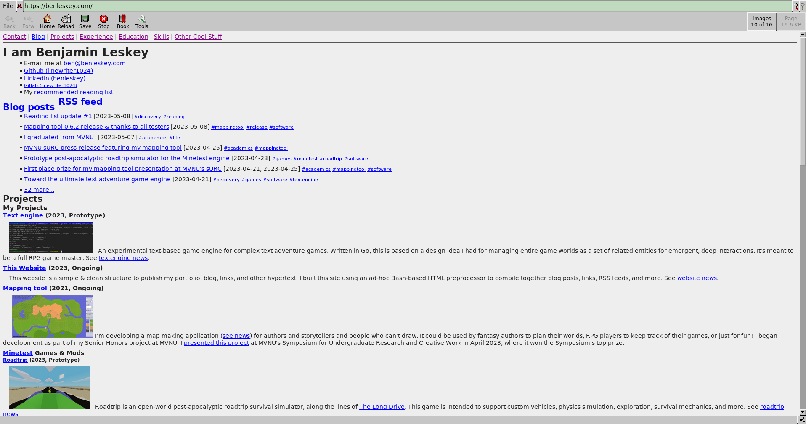
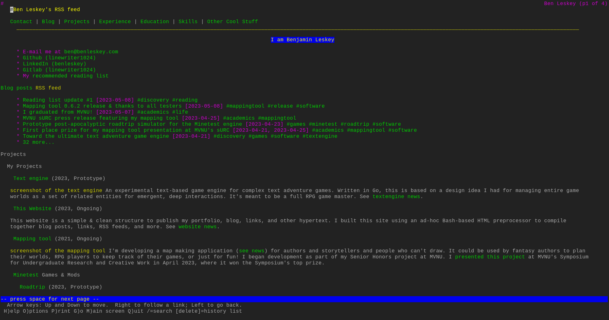

You may not know what Dillo is.
That's Dillo. It's a plain graphical web browser with minimal feature set beyond being able to draw text and, sometimes, images. Why would anyone want that? Well, there's not much practical reason now—every modern browser supports a truckload of features beyond simple HTML—but it does indicate a simplicity and graceful degradation that is aesthetically desirable. This website, for instance, is entirely usable in Dillo. Javascript doesn't work, but everything has a fallback. If your site works in Dillo, then it is simple enough.
It's not even difficult to make this site work in Dillo. In fact, it avoids any kind of bloat. This site can't rely on Javascript, or on complicated styling, or on anything but simple text to get its message across. Functionality beyond that is, as is traditional, just window dressing on top of a simple HTML structure. Common? No. But if your site works in Dillo it will probably satisfy the hacker hipsters.
You can, of course, take it further and make the Lynx test ;). You'd better hope you've got alt text on your img elements!
